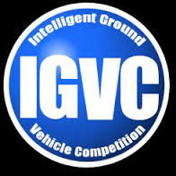

WRO INDIA
WORLD ROBOT OLYMPIAD is organised by India STEM Foundation. Being organsied since 2006, this is a not-for-profit competition.
- The WRO® theme for 2022 is My Robot My Friend. The combination of robotics and artificial intelligence can change the world and especially the environment of humans.
- Students from age group 9 to 25 years can participate
- Challenges available:
- Regular
- WEDO
- Open category
- WRO Football
- Advanced Robotics Challenge
- WRO Brick Set
- Tentative Dates:
- October, 2022(INDIA)
- November 17-19, 2022 (GERMANY)
- Register at: WRO's Official Website
TECHNOXIAN
This is a global platform where the participants in different competitions related to innovation, robotics, automation and many other fascinating challenge-based engineering competitions.
- From school to under-grad students can participate
- Challenges available:
- Junior Robo Race
- Senior Robo Race
- Fastest Line Follower
- Robo War
- Tentative Dates: August 21, 2022 (NEW DELHI, INDIA)
- Register at: TECHNOXIAN's Official Website
IGVC
Student teams compete with their intelligent ground vehicles, testing technologies representing intelligent transportation systems, manufacturing and military mobility.
- Under-graduate students are eligible to participate
- It is split into three challenges:
- The Auto-Nav Challenge
- Interoperability Profile Challenges
- The Self-Drive Challenge
- The Design Challenge
- Dates: June 3-6 (OAKLAND UNIVERSITY, MICHIGAN)
- Register at: Official IGVC Website